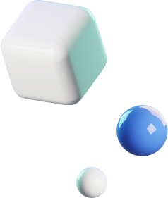

VIRGINIA TECH - INNOVATION CAMPUS AND ACADEMIC BUILDING
Toolkit: Revit, Sketchup, Enscape, Lumion, Yulio, Photoshop.
Role: 3D Modeling, Rendering, AR integration
Transforming and sustaining the greater washington D.C. metro area as the next emerging tech hub for talent and innovation.
Project Background
The Virginia Tech Innovation Campus and Academic Building (ICAB) is centered around principles of sustainability, accessibility, flexibility, and integrated technology. When completed, the 300,000-square-foot building will provide instruction, research, office, and support spaces for graduate-level programs in Computer Science and Computer Engineering, as well as select other programs.
The Process
I was brought in during the construction documentation phase to model, render, integrate and deploy VR experiences. The final product was used to create an immersive experience for a client's fundraiser and to enhance the client's understanding of the design. The process was as follows:
- Model creation in Sketchup: a basic 3D model was exported from Revit using the information provided during project documentation. Revit models are usually developed for 2D documentation, therefore lacking three-dimensional details. This step involved modeling detailed exterior components, building systems, landscape, interior components, and entourages.
- Materials and Scene Setup: Once the scene was modeled, materials and textures were added to the SketchUp model. Layers were organized by object types and materials were assigned following the design intent created by the documentation team. Desired camera views were created to set up for a preview of the model.
- Launching Enscape: A real-time preview was created through Enscape. This was also when lighting, time of day, and other environmental settings were added to achieve the desired mood and atmosphere.
- Iterate and Refine: As the rendering progresses, adjustments were made to the SketchUp model and Enscape settings to achieve the desired results. Enscape's real-time rendering capabilities allow for quick iteration and refinement.
- Export and Post-Processing: The scenes were generated using the 360° panorama option in both mono and stero. Stereo exports were uploaded to the cloud via Yulio and viewed with Google Carboards. Mono exports were assigned QR codes and used on tablets to create a walking tour during a client’s fundraiser.
360 images used for VR
2D RENDERINGS


Coded with ♥ by Aurélie